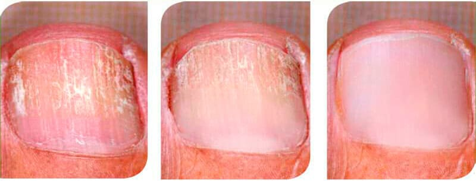
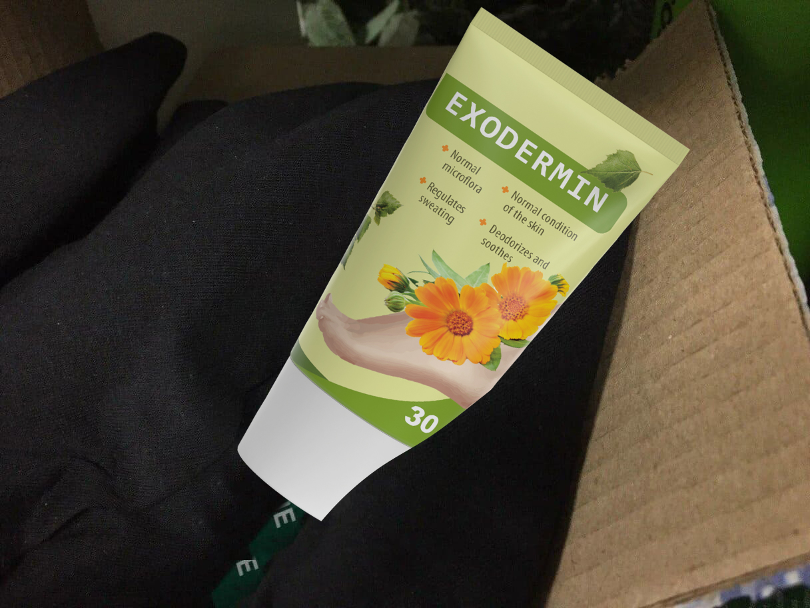

Medicul șef al or. București și județului Ilfov „Ciuperca unghiilor
infectează
sângele și declanșează procesul de necroză. Există o cale de salvare, pentru toată lumea.”
Otilia Atanasiu: „Vă garantez că fiecare persoană cu ciupercă a unghiilor din
Romania va primi preparatul care tratează ciuperca și previne septicemia cu 50%
reducere.”
De la conferința de presă a dnei Otilia Atanasiu, medic șef al orașului București și județului
Ilfov:
„Ciuperca unghiilor pătrunde în sânge și în organele interne, declanșând procesul de
septicemie și
distrugând organismul. Mortalitatea cauzată de ciuperca unghiilor în România este una dintre
cele mai
înalte din lume. Niciun infectat nu trăiește mai mult de 10–14 ani.”
Interviu exclusiv al publicației București cu dna Otilia Atanasiu, medic șef al
orașului
București.
De ce ciuperca unghiilor ucide și cum să-ți salvezi viața dacă au început să-ți
îngălbenească unghiile și ai ciupercă?
De ce credeți că ciuperca unghiilor este o boală periculoasă?
Știți câți oameni a ucis ciuperca în 2019? În județul nostru în anul 2019 au decedat 55 de mii
de
oameni, dintre aceștia din cauza ciupercii unghiilor mai mult de 31 de mii, adică mai mult de
jumătate.
Ciuperca unghiilor acționează nu numai asupra unghiilor afectate. Prin țesuturile piciorului,
aceasta
pătrunde în sânge și se răspândește în tot corpul, ciuperca distruge literalmente corpul din
interior,
exercitând o presiune colosală asupra tuturor organelor. Sporii săi se opresc în organele
interne și încep
să se înmulțească treptat acolo, provocând daune. Se dezvoltă micoza organelor interne. Aceasta
înseamnă
că fiecare infectat în esență putrezește din interior. În orice moment inima se poate opri, se
poate rupe
un vas cerebral, poate apărea cancer hepatic sau insuficiență renală. Fiecare persoană cu
ciupercă a
unghiilor este în pericol. Orice scădere a imunității datorită răcelii obișnuite,
suprasolicitării la
locul de muncă sau stresului nervos se poate termina cu o moarte subită.
De aceea cred că ciuperca unghiilor este o boală extrem de periculoasă, care în prezent este una
dintre
liderii mortalității în rândul tuturor bolilor din România. Toată lumea știe de cancer și
oncologie, dar
să recunoaștem, cancerul apare la 3–4% din oameni, iar ciuperca unghiilor începând cu vârsta de
40-45 ani apare aproape la fiecare al doilea.
De ce medicii nu pot face față acestei boli? Doar trebuie să salvați oamenii.
În primul rând, oamenii de multe ori pur și simplu nu merg la medici cu ciuperca unghiilor,
considerând că
nu este o boală prea periculoasă. Și dacă merg, doar în cazul când sunt complet deranjați, de
exemplu dacă încep careva probleme externe cu piciorul sau degetele. Le vor prescrie ceva, se
vor simți mai bine
și apoi nu vor mai apărea până nu li se va face rău de tot. Dar pentru a elimina ciuperca, este
necesar să
se facă un tratament permanent. În plus, puțini oameni înțeleg ce consecințe poate avea infecția
cu
ciupercă și ce poate face aceasta cu organele interne. Pot vorbi despre sute de cazuri,
dar mă voi
concentra pe cele care demonstrează cel mai clar pericolul de infecție cu ciupercă.
Una dintre cele mai cunoscute manifestări externe ale ciupercii este ciuperca
unghiilor:
Vezi imaginea
Ciuperca care a cauzat necroza țesuturilor și amenințarea amputării:
Vezi imaginea
Ciuperca care devorează țesuturile moi ale omului:
Vezi imaginea
Plămân, mâncat de ciuperci din interior:
Vezi imaginea
Într-un fel, e bine de a ameliora situația din exterior, dar acest lucru nu vă va îndepărta de
rezultatul
letal. Puteți muri în orice moment.
În al doilea rând, în clinici este acum o lipsă monstruoasă de personal. Ce să faci dacă în
întregul județ
este doar un singur micolog și o deficiență de dermatologi de peste 37%? Și dintre cei care sunt
prezenți,
mai mult de jumătate vin cu diplome cumpărate. E periculos să le dai acces la oameni, ei
prescriu uneori
un astfel de tratament, că ar fi mai bine ca pacientul să stea acasă și să nu se adreseze
clinicii. Nu pot
refuza angajarea unor astfel de specialiști: medici nu ajung catastrofal, fiecare are diplomă,
unii chiar
cu excelență. Ei au absolvit universitatea cu onoruri, iar pe pacienți îi omoară cu zile.
Medicii din
generația veche mor din cauza vârstei, totuși munca de medic este grea. Locurile lor sunt
ocupate de
astfel de „cretini”, care nu știu ce să prescrie pacientului în funcție de caz. Mi-ar plăcea
să-i
concediez pe toți și să angajez personal calificat, dar de unde să-l iau acum?
Se pare că din cauza lipsei de medici calificați, avem în județ o mortalitate atât de
ridicată cauzată
de ciuperca unghiilor?
Nu numai. Este o lipsă acută de medicamente eficiente. În farmacii se vinde orice, cu excepția
produselor
care pot ajuta cu adevărat. Medicamentele învechite care nu mai ajută sau falsurile de modă
nouă, care
sunt lăudate peste tot, sunt scumpe dar sunt fără de folos. În plus medicii noi pot prescrie
orice.
Adesea sunt astfel de medicamente care posibil vor ajuta temporar, dar în același timp vor
afecta atât de
mult ficatul sau stomacul, încât consecințele pot fi extrem de înfricoșătoare. Și mai e ceva,
majoritatea
medicamentelor nu vizează tratamentul adevărat al ciupercii, ele ajută numai la eliminarea
manifestărilor externe ale ciupercii, care rămâne în organism ucigându-l încet.
În complex, obținem acest rezultat: oamenii nu primesc tratament și mor din cauza septicemiei și
a
infectării organelor interne cauzate de o simplă ciupercă a unghiilor. Desigur există și centre
medicale
private, dar acolo lucrează aceiași medici ca și în clinicile obișnuite. Și cea mai mare parte
sunt
absolvenții care nu înțeleg nimic în tratamentul adevărat al oamenilor. Singura lor sarcină în
centrul
medical privat este de a stoarce maximum de bani dintr-o persoană. Nu au sarcina de a ajuta cu
adevărat și
de a vindeca.
Ce să facă în așa caz oamenii care au ciuperca unghiilor? Să aștepte moartea? Sunteți medicul
șef, dacă
știți despre această problemă, atunci de ce nu o rezolvați!
Firește că nu stau fără treabă, dar problema cu cadrele medicale nu este atât de ușor de
soluționat. Aici
totul depinde nu de mine ci de activitatea universităților medicale. Eu nu mă pot ocupa de
pregătirea
noilor doctori. Prin urmare, nu trebuie să ne așteptăm la o soluție rapidă a acestei probleme.
În plus,
această situație nu este doar la noi, în județele învecinate nu este mai bine. Aproape peste tot
este
aceeași situație.
Dar există și un moment îmbucurător în această luptă pentru viețile oamenilor. Am reușit să
obțin
selectarea județului nostru în calitate de pilot pentru eliberarea unui nou preparat, capabil
să vindece complet ciuperca unghiilor și să o elimine din organism.
De ce credeți că acest preparat va schimba cumva situația?
Acesta vindecă complet ciuperca unghiilor, eliminând atât manifestările sale externe cât și
curățând
complet organismul de urmele sale. Din primele zile de la utilizarea medicamentului, amenințarea
vieții
persoanei infestate scade aproape la zero. O persoană pur și simplu începe să folosească acest
preparat și
deja iese din zona de risc. Preparatul curăță sângele și organele interne de ciuperca, care este
răspândită în întreg organismul și oprește procesele cauzate de ciuperca care ne ucide tăcut din
interior.
În opinia mea, acest preparat va salva zeci de mii de vieți. Așa că mi-am depus toată străduința
și am
luptat la oficiali insistând ca județul nostru să fie ales în calitate de pilot.
Ce preparat este acesta? Care este secretul eficacității sale?
Acest preparat este în prezent un lider absolut în tratamentul bolilor fungice, este un remediu
de o nouă
generație „”. Spre deosebire de multe alte preparate,
acesta nu este creat de o companie farmaceutică comercială ci de structurile științifice de
stat. În
crearea preparatului a fost implicat un grup interdepartamental de cei mai buni medici și
cercetători din
România. În ceea ce privește eficacitatea, este de zeci de ori mai mare decât toate tratamentele
medicale
și cosmetice tradiționale cunoscute. În același timp nu are efecte secundare, nu provoacă
dependență și
produce imunitate la agenții patogeni fungici, ceea ce permite excluderea cazurilor de
îmbolnăviri
repetate.
Secretul eficacității sale este în acțiunea combinată și eficientă asupra corpului uman.
Singurul motiv
pentru supraviețuirea ciupercii unghiilor este complexitatea distrugerii sale complete. Cel mai
adesea rămâne undeva pe picior sau pe organele interne, revenind după tratamentul unghiilor din
nou și din nou.
În acest caz sistemul imunitar al organismului nu este capabil să facă față pe cont propriu.
Maximul pe
care îl poate face este de a opri dezvoltarea unei infecții fungice, iar orice scădere a
imunității duce
la o creștere rapidă a ciupercii, la dezvoltarea micozei și la moarte.
„” formează în organism anticorpi speciali care acționează asupra ciupercii și o
distruge în
întreg organismul. Datorită acestui fapt, corpul uman este complet curățat de ciupercă, în plus
stimulează producția de anticorpi în viitor. Aplicarea preparatului permite creșterea de zeci de
ori
a rezistenței organismului la ciupercă. Din nou probabil că nu o veți mai contacta. Cu o singură
cură de
tratament „” curăță complet organismul de infecția fungică, prevenind orice
complicații.
De ce „” este mai eficient decât alte antifungice cunoscute vândute în farmacie?
Infecțiile fungice sunt cunoscute a fi organisme vii și acestea se adaptează la condițiile
mediului
înconjurător ca orice organism viu. Absolut majoritatea agenților antifungici au fost dezvoltați
acum
20–30 de ani și în această perioadă infecțiile fungice și-au creat propria imunitate la
majoritatea
agenților antifungici. „” este un remediu absolut nou, acesta a fost dezvoltat luând în
considerare studierea patogenezei a peste 6000 de tulpini fungice diferite și, datorită formulei
noi
unice, distruge complet ciuperca atât din exterior – pe unghii și pe piele cât și în interiorul
organismului și curăță corpul de ea.
Eficacitatea preparatului este dovedită de studiile efectuate de centrul nostru cu
participarea
voluntarilor, folosind o varietate de remedii populare pentru tratamentul fungilor, rezultatele
au
confirmat eficacitatea ridicată a „”:
Agenţi antifungici
Procentul de eficacitate %
Ekzoderil
Lamizil
Loceril
Mikolok
Mikozan
„” neutralizează complet infecția și în același timp descompune particulele fungice din
sânge și organele interne. Acest lucru permite să opriți procesul de infectare a corpului și îi
oferă
acestuia posibilitatea de a se recupera. Toate focarele de infecție existente în organism sunt
eliminate.
Ca rezultat persoana se curăță complet de infecția fungică și revine la o stare sănătoasă. Mai
mult decât
atât după cura cu acest preparat persoana dezvoltă imunitate la ciupercă, adică riscul de a se
infecta
din nou lipsește.
Preparatul are o acțiune puternică asupra corpului:
1. Dezinfectează și distruge structura infecției fungice;
2. Elimină mâncărimea, exfolierea și iritarea pielii picioarelor după primele
aplicări;
3. Reface rapid structura unghiilor și vindecă rănile și fisurile de pe picioare;
4. Elimină mirosul neplăcut și normalizează activitatea glandelor sudoripare;
5. Previne reproducerea și creșterea microflorei patogene;
6. Normalizează sistemul imunitar, promovează vindecarea bolilor fungice cronice;
7. Curăță sângele și limfa de produsele de putrefacție și descompunere a ciupercilor;
8. Dezvoltă imunitate la majoritatea tulpinilor cunoscute de agenți patogeni fungici;
9. Are un ambalaj inovator de unică folosință care exclude reinfectarea cu ciuperci;
10. Elimină complet toate simptomele de micoză la utilizarea curei de tratament
recomandate.
Acţiunea preparatului

Început 3 3 săptămâni 6 6 săptămâni
„” este disponibil sub formă de cremă. Сremă exclude reapariția infecției fungice și
transmiterea infecției pe pielea sănătoasă.
Există careva contraindicații? Și de ce preparatul este eliberat cu 50% reducere?
Nu există contraindicații. Compoziția „” este aleasă astfel încât să nu provoace
reacții
alergice. Preparatul poate fi luat chiar și atunci când sunteți alergic la alte medicamente.
Este complet
sigur pentru ficat, care de obicei suferă foarte mult atunci când la administrarea oricărui
medicament.
În ceea ce privește a doua întrebare așa cum am spus preparatul a fost creat de structurile de
stat și
proprietarul formulei preparatului este statul. Producția se desfășoară acum pe baza capacității
Asociației de combatere a infecțiilor fungice și începe să se extindă. Firește, dacă
proprietarul „” ar fi fost o companie farmaceutică, atunci aceasta l-ar fi vândut
pentru bani grei, dar în acest
caz proprietarul este statul, acest program este chemat să încurajeze cetățenii, care au grijă
de
sănătatea lor, astfel la comanda unei cure de tratament, „” se eliberează cu 50%
reducere.
Costul de producție este plătit parțial din buget, așa că am reușit să obținem o cantitate
limitată de
preparat pentru a o elibera populației cu 50% reducere.
Certificate și protocoalele de testare a preparatului „”
Cum pot oamenii obține „”? Este nevoie de careva certificate sau de pașaport?
Tot ce este necesar este să locuiți pe teritoriul României. „” este trimis direct din
depozit și este livrat prin curier. Livrarea este plătită
de cumpărător. Transportarea în județ și eliberarea de la o anumită adresă, cu cozi lungi și
așteptări, am
considerat-o o idee neproductivă. Pacienții cu micoză suferă în fiecare zi și noi îi vom face să
stea la
coadă și să fie supuși stresului? Este foarte simplu de a obține preparatul – lăsați o
cerere cu numele și
telefonul dvs., așteptați apelul specialistul care va selecta cura de tratament potrivită anume
pentru dvs.,
specificați adresa de livrare, apoi va trebui doar să așteptați curierul.
Trebuie să depuneți o cerere pe pagina oficială.
Așa
cum am spus, trebuie doar să introduceți numele dvs. și numărul de telefon. Eu garantez
personal că toți cei care au depus cererile vor primi cu siguranță preparatul lor.
Adăugat . Rezervele de „” se apropie de
sfârșit, având în vedere că suntem obligați să limităm perioada de desfășurare a programului
până la
(inclusiv).
La rugămintea dnei Atanasiu, postăm un link către site-ul pe care puteți depune o cerere pentru
„”:
34 comentarii astăzi
Maria Constantin / București
Am avut o ciupercă la unghii. și a dispărut... a trecut timp de o lună! Mulțumesc
pentru asta!
o oră în urmă
Andreea Ștefănescu / Sibiu
Susțin! Am primit „”, abia am început să-l folosesc, pe pielea din jurul
unghiilor
este deja efect!
o oră în urmă
Lavinia Cozma / Brașov
Sunt atât de recunoscătoare pentru informațiile despre acest produs. Am căutat
ceva de genul ăsta
de mult timp. Aștept cu nerăbdare pachetul! Mulțumesc!
o oră în urmă
Andrei Vasilescu / Ploiești
Dna Atanasiu, vă mulțumesc! Am încercat, îmi este mai ușor. Să vedem ce se
întâmplă într-o
săptămână. E prea devreme să spun ceva, revin mai târziu. Dar, în exterior,
unghiile se schimbă
deja în bine. Deci, cred că va fi bine!

o oră în urmă
Otilia Atanasiu / București
Andrei, nu vă faceți griji și continuați să utilizați „”. Principalul
lucru este să
urmați instrucțiunile de utilizare a preparatului.
Cu respect, Otilia
o oră în urmă
Andrei Silvestru / Timișoara
Lume, ajutor! M-am săturat de ciupercă, nu o pot vindeca cu nimic. Disconfortul
și durerea nu mă
lasă în pace. Nu mai știu ce să fac. Iau diferite medicamente periodic, dar ele
nu ajută :(
o oră în urmă
Severin Bădărău / Brașov
Andrei, ia „”, nu vei regreta, cu atât mai mult că este cu 50% reducere.
Am avut și
eu probleme din cauza ciupercii, s-a început afectarea țesuturilor piciorului,
mă prefăceam într-o
legumă, am lăsat mâinile în jos. Mulțumesc mamei că a găsit „” și m-a
impus să-l
folosesc. Apropo, l-am cumpărat o lună în urmă, fără niciun program de reducere.
A rămas puțin mai
mult de o săptămână din cura lunară, unghiile rămase afectate le tai cu
foarfecile, pe degetul
mare a rămas puțin, pe altele nu mai este! Timp de o săptămână care a rămas,
trebuie să dispară și
de acolo. Până acum am folosit multe produse, nimic nu m-a ajutat.
o oră în urmă
Mădălina Popescu / Oradea
Cum pot obține „”?
o oră în urmă
Nicolae Solovan / Sibiu
Mădălina, aici e link-ul „”, doar că te sfătuiesc să te grăbești cât mai
este activ
programul de reducere.
o oră în urmă
Mădălina Popescu / Oradea
Nicolae, da, mulțumesc, am comandat deja, am depus cererea
poți să-mi spui cât de mult va dura livrarea?
o oră în urmă
Nicolae Solovan / Sibiu
Mădălina, va veni în aproximativ o săptămână :)
o oră în urmă
Marinela Szabo / Timișoara
Este un produs incredibil, vă sfătuiesc pe toți, așa am obosit de ciupercă, nu
poți merge pe
plajă, nu poți purta pantofi deschiși. Dar, după ce am folosit „” timp
de patru săptămâni, starea s-a ameliorat și acum nu a mai rămas nicio urmă de
ciupercă.
o oră în urmă
Mihai Robu / Constanța
Marinela, rezultatul este chiar atât de eficient? Probabil ar trebui să-mi comand
și mie.
o oră în urmă
Vasile Samoilă / Deva
Acesta este un produs foarte bun, l-am folosit împreună cu soția, după ce această
infecție a
intrat în casa noastră. Terapia de familie a mers bine, ciuperca a dispărut la
ambii și nu a mai
apărut. Acum, fără jenă, am început să mergem la piscina publică și la baie.
o oră în urmă
Mihai Constantin / Baia-Mare
Văd că nu numai eu am astfel de probleme, dar mulțumesc lui Dumnezeu că am dat
acum o lună peste
„”, m-a salvat de la ciupercă, atât de repede cum nu au putut face o
grămadă de
medicamente .
o oră în urmă
Alexandra Oltu / Târgu-Jiu
Spuneți-mi, produsul chiar mă va ajuta? Pentru că de la medicamente și medicii nu
am niciun efect
o oră în urmă
Maria Popescu / Brașov
Alexandra, da, sigur. Efectul este foarte puternic și cel mai important este
complet natural. Așa
că grăbiți-vă să comandați cât este cu 50% reducere! Soacra mea a scăpat complet
de ciuperca
piciorului cu „”.
o oră în urmă
Antonia Cioclea / Cluj
Mulțumesc, „” m-a ajutat foarte repede! Am comandat anume direct de la
producător!
Nu tărăgănați cu tratamentul, mai bine scăpați de aceste probleme cu ciuperca
chiar acum, decât
mai târziu să cădeți la pat și să înțelegeți că nu vă puteți mișca din cauza
unui fleac.
o oră în urmă
Carolina Paulescu / Sibiu
Mulțumesc, dna Atanasiu. Dacă n-ați fi fost dvs., n-aș fi crezut în eficacitatea
produsului!
Unghiile se distrugeau în mod constant și mă dureau, am încercat să le tratez cu
un lac special,
am băut pastile. Lacul a ajutat doar temporar. Acum folosesc „”,
rezultatul este
super. Ung deja 3 săptămâni, dar am decis să finalizez cura de o lună!
Și pachetul a venit foarte repede.
o oră în urmă
Otilia Atanasiu / București
Carolina, cu plăcere. Mai bine spuneți, vă rog, cu ce remedii ați încercat să
tratați ciuperca
înainte de „”?
Cu respect, Otilia
o oră în urmă
Carolina Paulescu / Sibiu
Dna Atanasiu, Exoderil, Lamisil și un alt lac. Nu m-a ajutat nimic...
o oră în urmă
Otilia Atanasiu / București
Carolina, am înțeles, mulțumesc.
Cu respect, Otilia
o oră în urmă
Ileana Costescu / Iași
Rezultatul, pur și simplu, a depășit așteptările mele. Toată ciuperca de la
degetele mâinii a
dispărut în 4 săptămâni! Am comandat câteva pachete și prietenilor mei.
57 minute în urmă
Oreste Neantu / Vaslui
Ciuperca am adus-o din armată. Am încercat diferite mijloace pentru a o trata -
fără succes. Am
aflat despre „” de la un medic cunoscut. Am cumpărat în cadrul
programului de
reducere. Am uns conform instrucțiunilor de 2 ori pe zi, unghiile le tăiam.
Tratamentul a durat
aproximativ o lună. Am comandat aici, am
fost foarte repede
sunat înapoi și confirmată comanda. Acum,
pot purta sandale pe timp cald și nu îmi este rușine să merg la piscină. :)
55 minute în urmă
Ana Cozmescu / Târgu Mureș
Soțul meu deja de 3 ani suferă de o micoză, este un coșmar, unghiile sunt
îngălbenite, iar
mirosul nici nu-l pot descrie. La început am picurat picături, apoi am folosit
un lac, nu-mi mai
amintesc denumirea, soțul meu s-a enervat și s-a lăsat bătut, deoarece nimic nu
îl ajuta. Am
încercat „” la sfatul prietenei mele și rezultatele au devenit vizibile
în doar 2
săptămâni. Păcat că n-am putut să-l luăm cu 50% reducere.
53 minute în urmă
Veronica Pascu / Timișoara
În farmacia privată a unui prieten de-al nostru un
ambalajul de „” este vândut pentru aproape 250 , cura de tratament
depășește suma de 1000 , așa că nu
m-am decis să cumpăr, nu am avut atâți bani. Dar aici am văzut că este un program
special și am
comandat imediat.
Ciuperca se retrage în fiecare zi, și s-ar părea că e un cremă obișnuit.
48 minute în urmă
Otilia Atanasiu / București
Veronica, deci, farmaciile încearcă și ele să-l comercializeze? Este un păcat să
iei atâția bani
de la oameni. Acum vom urmări: unde și cui trimitem produsul.
Cu respect, Otilia
36 minute în urmă
Lavinia Cozma / Vaslui
Rezultatele mele. Unghiile trebuie tăiate obligatoriu!
44 minute în urmă
Mihai Toma / Timișoara
Câteva zeci de ani am încercat să vindec ciuperca neglijată și totul în zadar. Am
decis să încerc
„”, despre care a vorbit medicul, a trecut totul în 5 saptămâni. Și mă
întreb, de ce nu
am cunoscut acest produs mai înainte?
39 minute în urmă
Otilia Atanasiu / București
Maxim, aici, din păcate, nu se poate face nimic. Pentru a dezvolta un astfel de
preparat eficient
a durat o mulțime de timp, au fost investiți o mulțime de bani. Dar, după atât
de mult timp,
oamenii pot scăpa rapid de probleme cu ciuperca.
Cu respect, Otilia
36 minute în urmă
Oana Noica / Sibiu
Am citit articolul și am decis imediat să comand pentru a încerca. Medicamentele
obișnuite mă
ajutau pe un timp scurt, mi se spunea că ciuperca este greu de vindecat. Acum vă
arat rezultatele. „” a venit foarte
repede. Mulțumesc mult, acum chiar pot să trăiesc o
viață normală!
31 minute în urmă
Ilona Costiuc / Pitești
Oameni buni, spuneți-mi unde ați comandat? În farmacii, acest produs nu se vinde,
dar pe internet
îmi este frică să comand. Aș vrea să nu dau peste un fals, deoarece înțeleg că
nu va fi de niciun
folos.
27 minute în urmă
Otilia Atanasiu / București
Repet încă o dată că „” poate fi comandat NUMAI direct
de la
producător, pentru a nu face vreo greșeală, trebuie doar să faceți clic pe
link-ul de mai
sus! În mod special, în cadrul programului de reducere, există posibilitatea de
a obține produsul
cu 50% reducere, dar nu va dura mult timp, așa că grăbiți-vă să comandați!
Și feriți-vă, vă rog, de falsuri.


Am avut o ciupercă la unghii. și a dispărut... a trecut timp de o lună! Mulțumesc pentru asta!